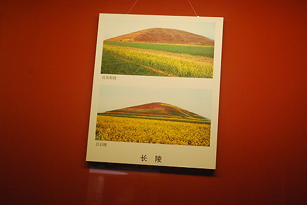

|

Several tombs when entered lost their contents due to oxidizing on contact with our air. Authorities are saying they don't intent to open this tomb until better preservation techniques are discovered. Qui Shi Huangdi is credited with the terra cotta warriors, the unification of China, the simplification of writing and administration, and the start of the great wall of China. |